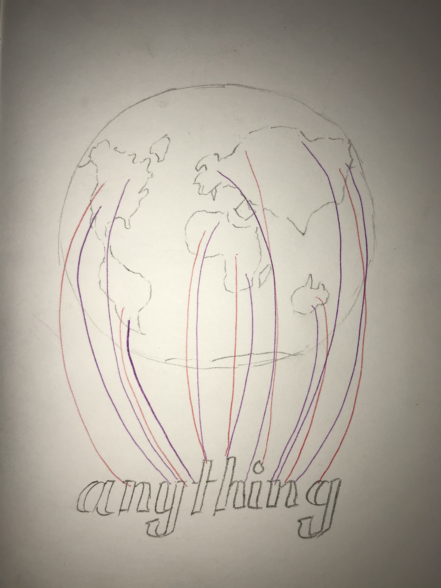

Current Projects
Home
About
Current Projects
Past Projects
Coding a Song
Gypsy by Fleetwood Mac
Maxims Project
Favorite Quotes

Favorite Music Artist
Ariana Grande
Favorite Visual Artist
Darren Butcher
Webring Site
Second Webpage
My Prefs
Scary Lookin' Lyrics
Clock Project
Generator Project
Data Visualization Project